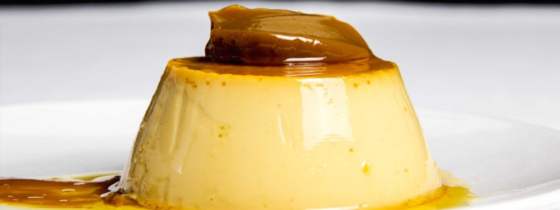
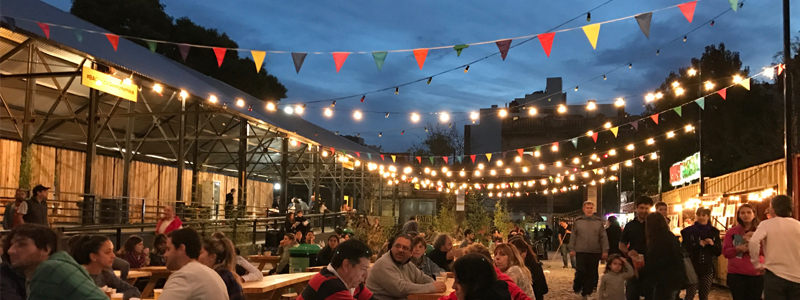

Donde Comer
En este buscador, vas a poder filtrar por nombre, tipo de establecimiento y por barrio
ver mas

En este buscador, vas a poder filtrar por nombre, tipo de establecimiento y por barrio
ver masEn buenos aires vas a encontrar platos tipicos y comida de todo el mundo
ver mas
conoce los patios y mercados en donde podes disfrutar de la mejor gastronomia de la ciudad
ver mas